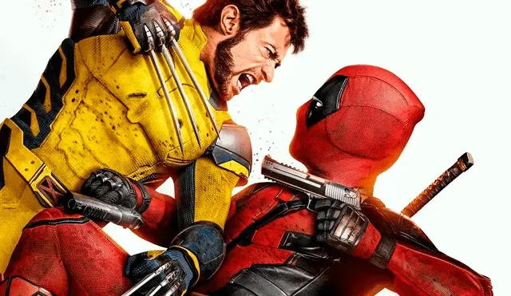

Introducción
Deadpool 3 presenta a Wade Wilson, quien retirado como Deadpool y trabajando como vendedor de autos, es capturado por la TVA. Paradox, un agente de esta organización, le revela que su línea temporal está colapsando debido a la muerte de Wolverine. Es de esta forma que, Wade emprende un viaje por el multiverso buscando una variante de Logan para salvar su universo.
